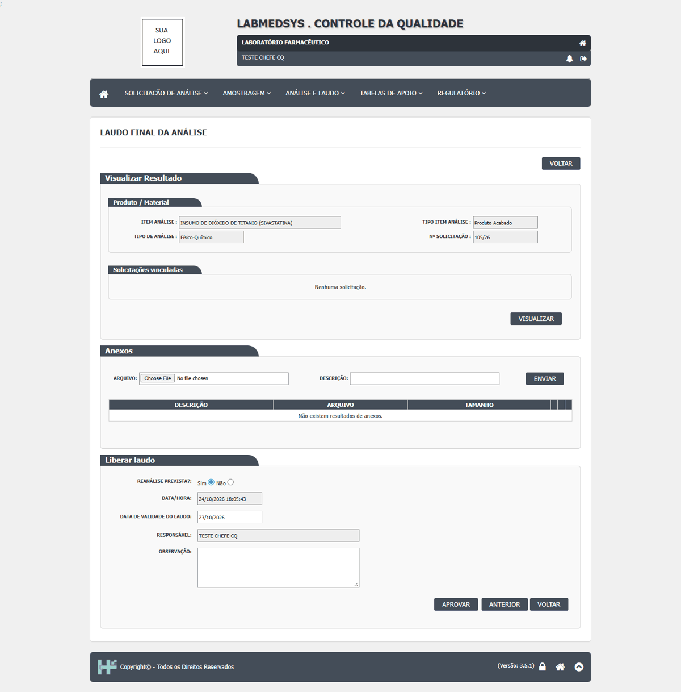
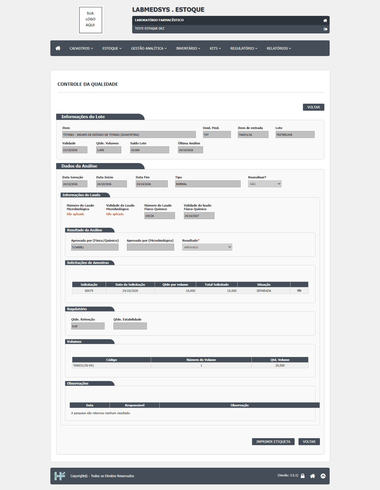
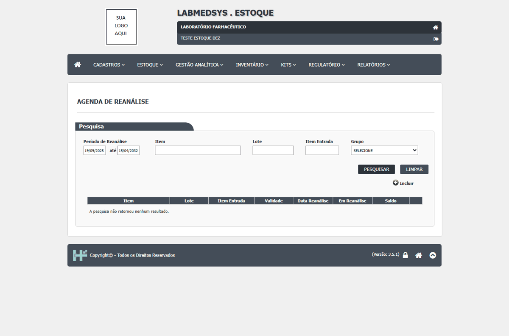
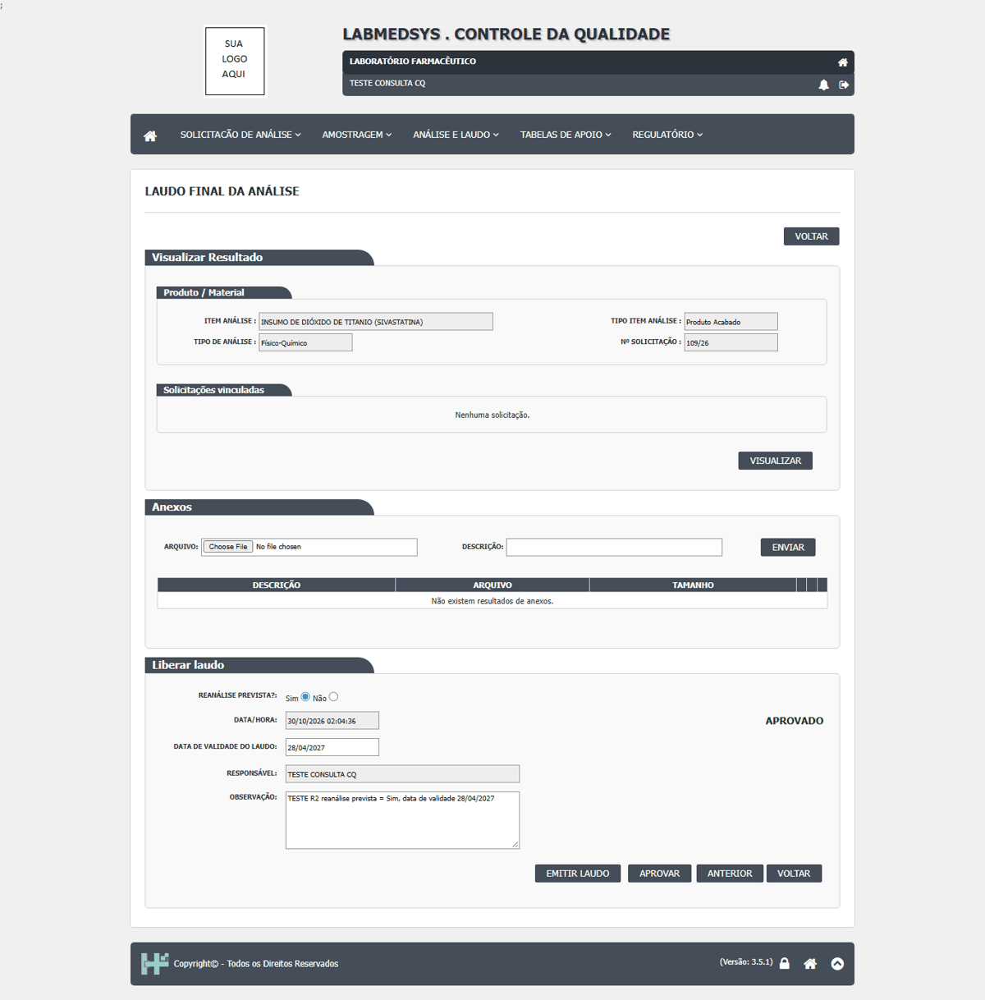
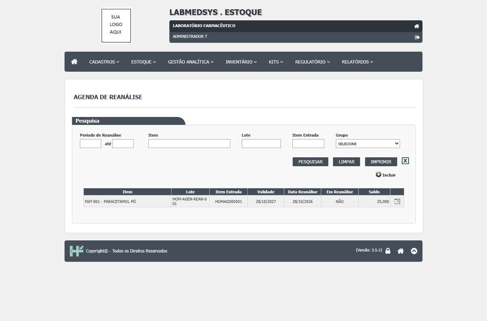
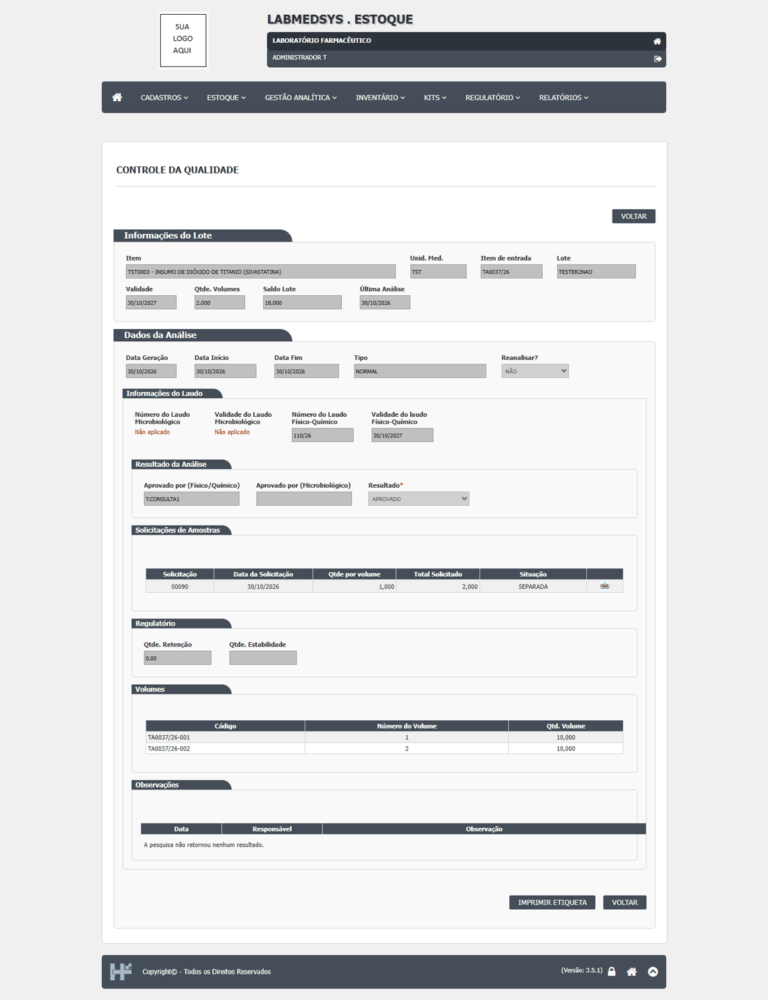

DV-EST-171 · Laudo aprovado com "Reanálise prevista = Sim" aparece no Estoque como "Reanalisar? = NÃO", e a Agenda de Reanálise nunca lista lotes
O laudo do CQ traz a opção "Reanálise prevista" **marcada em Sim por padrão**. Aprovando o laudo do lote `TA0031/26` sem mexer nela, a análise do Estoque mostra **Reanalisar? = NÃO** (assim como em `TA0023/26` e `TA0026/26`). A Agenda de Reanálise, com período largo ou sem período, mostra só a linha fantasma. A cadeia "laudo com reanálise prevista, data, Agenda, agendamento" não se completa. *Não foi provado em que direção o valor se perde (inversão ou falta de repasse); só que o padrão Sim chega como NÃO.* **Conclusão da comparação código × tela (27/10/2026):** a Agenda não usa a classificação de reanálise do item (como o DV-EST-041 supunha em 13/10); a consulta filtra pela data de reanálise gravada no lote pelo laudo do CQ (dalItemLote.cs:1511) e exige "Reanalisar? = Sim" na última análise (dalItemLote.cs:1490), valores que o fechamento da análise grava (analise_controle_ed.aspx.cs:477 e 487). Como o laudo chega como "Reanalisar? = NÃO", nenhum lote satisfaz a condição e a Agenda nunca lista nada: a cadeia laudo → data de reanálise no lote → Agenda → agendamento nunca se completa e a tela não cumpre a função. A reanálise de matéria-prima dentro da data de reteste é exigência da RDC 658/2022 (art. 189). Relacionados: DV-EST-041 (primeira ocorrência do sintoma, 13/10/2026) e DV-EST-043 (classificação do item, que esta lista não usa).
Como reproduzir o erro, passo a passo
- No CQ, aprovar um laudo deixando "Reanálise prevista" como veio (Sim).
- Atualizar Resultado no Estoque e abrir a análise: ver "Reanalisar?".
- Abrir a Agenda de Reanálise com período largo e Pesquisar.
Esperado
Reanalisar? = SIM com data; o lote aparece na Agenda.
Obtido
Reanalisar? = NÃO; Agenda sem lotes.
Evidência (captura da tela)






DV-EST-041 · A Agenda de Reanálise não lista lote nenhum: a lista depende da data de reanálise gravada no lote pelo laudo, não da classificação do item
O `TESTELOTE003` (reanálise em 12/10/2028) não aparece na agenda de 2026 a 2030; em 22/10/2026 (rodada 8) e em 24/10/2026 (rodada 12C, CT-EST-E25-01 e E25-08, com período largo e sem período) a lista continuou vazia, só com a linha fantasma. **A leitura de 13/10/2026 estava errada:** ela atribuía a lista vazia à classificação de reanálise do item, que travaria depois da primeira movimentação. A comparação código × tela (23 e 27/10/2026) mostra que a lista **não usa a classificação do item**: ela filtra pela **data de reanálise gravada no lote** pelo laudo do CQ (`IL.DATA_REANALISE`, dalItemLote.cs:1511) e exige que a última análise tenha "Reanalisar? = Sim" (`AC.REANALISE`, dalItemLote.cs:1490); a data e a marca vêm do fechamento da análise (analise_controle_ed.aspx.cs:477 e 487; RN-EST-085, que precisa ser corrigida). O sintoma é o mesmo do **DV-EST-171**, que passa a ser o defeito principal da cadeia laudo → data no lote → Agenda → agendamento; este registro fica como a primeira ocorrência do sintoma. Relacionados: DV-EST-171 (principal), DV-EST-043 (cadastro do Item sem a classificação, que o código desta lista não usa).
Como reproduzir o erro, passo a passo
- Abrir Estoque › Agenda de Reanálise.
- Pesquisar o período de 2026 a 2030.
Esperado
O lote com data de reanálise dentro do período aparece na agenda.
Obtido
Lista vazia.
Sem captura de tela registrada para este defeito.
DV-EST-040 · Lista sem resultado mostra uma linha fantasma com zeros e o botão Editar
Quando a lista não encontra nada, aparece uma linha com "0 / 0 / 0 / 0 / data de hoje / 0,000" e o botão **Editar**, como se fosse um registro.
Como reproduzir o erro, passo a passo
- Abrir Estoque › Revalidação de Lote.
- Pesquisar um lote que não esteja vencido (TESTELOTE003).
Esperado
Mensagem "nenhum registro encontrado", sem linha.
Obtido
Linha com zeros e botão Editar.
Sem captura de tela registrada para este defeito.